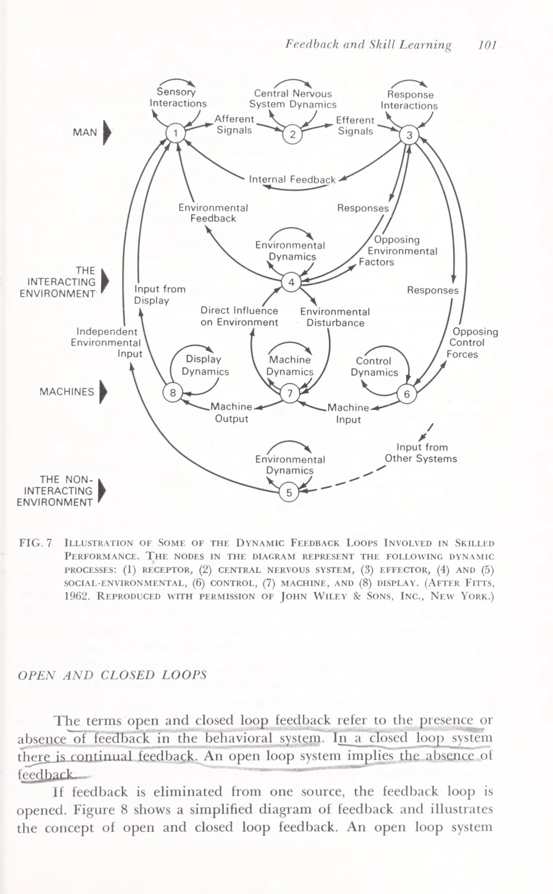

Chương 7: Phản hồi và Học tập Kỹ năng
Phản hồi (feedback) là một trong những khái niệm quan trọng nhất trong học tập. Wiener (1961) đã gợi ý rằng cái mà các kỹ sư điều khiển gọi là phản hồi là một yếu tố cực kỳ quan trọng trong việc điều khiển chuyển động và hành vi của con người. Bilodeau và Bilodeau (1961) đồng ý với Wiener về tầm quan trọng của phản hồi, đồng thời nhấn mạnh rằng đây là một trong những biến số mạnh mẽ và quan trọng nhất chi phối quá trình học tập và hành vi con người.
Cách tiếp cận điều khiển học (cybernetics) đối với học tập nhấn mạnh rằng con người vận hành như một hệ thống xử lý thông tin. Thông tin về trạng thái của môi trường liên tục được đưa vào hệ thống xử lý trung tâm. Thông tin này hoặc được lưu trữ, hoặc được sử dụng để định hướng các mẫu hành vi. Xử lý thông tin là một hoạt động diễn ra liên tục, và trạng thái đầu ra của hệ thống so với một kế hoạch hay mục tiêu (thuật ngữ điều khiển học chỉ những gì bạn đang làm) luôn được giám sát bên trong hệ thống con người. Hệ thống giám sát này tạo ra đầu vào mới cho hệ thống xử lý trung tâm.
Phản hồi có thể là dạng thông tin đầu vào đó, hoặc có thể là thông tin về hệ quả của một đáp ứng. Nhiều sách giáo khoa sử dụng thay thế cho nhau hai thuật ngữ phản hồi và tri thức về kết quả (knowledge of results). Tuy nhiên, cùng với sự gia tăng của các nghiên cứu và hiểu biết về phản hồi, việc sử dụng các thuật ngữ phân biệt rõ hơn loại hình, phương thức và vai trò của phản hồi tỏ ra phù hợp hơn là dùng chung một thuật ngữ “phản hồi” để chỉ mọi loại thông tin.
Các định nghĩa về phản hồi
Wiener (1961) đã định nghĩa phản hồi như sau:
khi chúng ta mong muốn một chuyển động tuân theo một mẫu hình cho trước, sự khác biệt giữa mẫu hình này và chuyển động thực tế được thực hiện sẽ được sử dụng làm đầu vào mới nhằm khiến bộ phận được điều chỉnh chuyển động theo cách đưa chuyển động của nó lại gần hơn với mẫu hình đã cho (tr. 6).1
Nhiều nhà tâm lý học nghiên cứu trong lĩnh vực thực hiện hành vi của con người đồng ý với Wiener và xem phản hồi như việc cung cấp thông tin sai số. Nói cách khác, phản hồi cung cấp thông tin dùng để so sánh đầu ra với một chuẩn tham chiếu (reference) hay tiêu chuẩn do người làm thí nghiệm, giáo viên hoặc người học thiết lập. Để hiệu chỉnh hành vi trong tương lai, một mức tham chiếu hoặc tiêu chuẩn phải được thiết lập, và đầu ra của người học phải được so sánh với tiêu chuẩn này.
Bilodeau (1966) ưa dùng thuật ngữ phản hồi thông tin (information feedback) hơn là chỉ gọi là phản hồi. Định nghĩa của bà về thông tin tương tự như định nghĩa của Wiener. Bà nêu rằng phản hồi thông tin là sự chênh lệch giữa mục tiêu và đáp ứng thu được—nói cách khác là thông tin sai số.
Theo quan điểm của nhiều người, thuật ngữ “tri thức về kết quả” đồng nghĩa với phản hồi. Rất dễ hiểu tại sao đặc biệt là các giáo viên lại coi phản hồi chính là tri thức về kết quả. Xét cho cùng, giáo viên khó có thể cung cấp nhiều thông tin sai số ngoại trừ sau khi quá trình thực hiện đã kết thúc, khi tri thức về kết quả có thể được xác định. Có nhiều loại phản hồi khác nhau. Để chính xác nhất có thể, các thuật ngữ phản hồi và phản hồi thông tin đang được sử dụng trong nghiên cứu học tập kỹ năng để chỉ tất cả các loại phản hồi chứ không chỉ riêng tri thức về kết quả.
Smith và Smith (1966) đã sử dụng thuật ngữ gắn liền với sự điều khiển chuyển động. Ngày càng trở nên rõ ràng rằng sự nhầm lẫn liên quan đến việc sử dụng đúng và sai thuật ngữ phản hồi một phần là do thiếu một định nghĩa rõ ràng. Do đó, trong phần thảo luận của chúng ta, phản hồi là thông tin đến một cách liên tục trong quá trình và như là hệ quả của chính đáp ứng của bản thân, hoặc đến như thông tin đầu vào mới từ các nguồn bên ngoài. Trong cả hai trường hợp, phản hồi được sử dụng để so sánh hành vi hiện tại với một đáp ứng tham chiếu hay mẫu chuyển động tham chiếu, tức là một mục tiêu hoặc tiêu chuẩn.
Vai trò của phản hồi
Hầu hết các chuyên gia đều đồng ý rằng phản hồi có thể tạo động lực, củng cố và/hoặc điều chỉnh hành vi. Nó điều chỉnh ở chỗ cung cấp thông tin từng khoảnh khắc liên quan đến việc tổ chức pha đáp ứng tiếp theo. Nó có thể có tính củng cố ở chỗ thông tin khen thưởng một lần thực hiện đạt yêu cầu sẽ làm tăng xác suất lặp lại một lần thực hiện tương tự. Nó tạo động lực theo nghĩa thông tin kích thích người thực hiện cố gắng hơn trong các lần thử tiếp theo.
Phản hồi hành động và phản hồi học tập
Miller (1953) đã sử dụng các thuật ngữ phản hồi hành động (action feedback) và phản hồi học tập (learning feedback) để mô tả các vai trò điều chỉnh và củng cố của phản hồi. Phản hồi hành động là thông tin về trạng thái đang thay đổi của một nỗ lực nhằm tạo ra một đáp ứng nhất định. Phản hồi hành động có thể không tạo ra sự thay đổi lâu dài trong hành vi. Phản hồi học tập hàm ý thông tin gây ra sự thay đổi ít nhiều mang tính lâu dài trong hành vi.
Adams (1964) sử dụng các thuật ngữ phản hồi củng cố (reinforcing feedback) và phản hồi điều chỉnh (regulating feedback) tùy theo cách mỗi loại ảnh hưởng đến việc học tập và việc thực hiện (performance). Phản hồi điều chỉnh, giống như phản hồi hành động, có thể ảnh hưởng đến việc thực hiện nhưng không ảnh hưởng đến việc học tập, trong khi phản hồi củng cố hay phản hồi học tập có thể tạo ra những ảnh hưởng sâu sắc đến việc học tập. Annett và Kay (1957) chỉ ra rằng sự phân biệt giữa phản hồi hành động (điều chỉnh) và phản hồi học tập (củng cố) không phải lúc nào cũng rõ ràng. Khó khăn nằm ở chỗ trong một số trường hợp, cái được gọi là phản hồi hành động thực chất lại là phản hồi học tập.
Phản hồi hành động và phản hồi học tập được sử dụng trong các hoạt động thể thao. Ví dụ, trong môn bowling, nhiều người chơi sử dụng băng đeo cổ tay. Băng đeo cổ tay đóng vai trò như một lời nhắc nhở người ném giữ thẳng cổ tay trong suốt cú vung tay và lúc thả bóng sau đó. Việc tháo băng đeo cổ tay có thể khiến người chơi “quên” và gập cổ tay lại. Trong trường hợp này, người chơi đã nhận được phản hồi hành động. Nếu sau khi tháo băng đeo cổ tay, người chơi vẫn có thể giữ thẳng cổ tay, thì băng đeo cổ tay đã có thể là nguyên nhân tạo nên một sự thay đổi ít nhiều lâu dài, tức là “học tập”. Phản hồi này nên được gọi là phản hồi học tập hoặc phản hồi củng cố.
Cần lưu ý rằng phản hồi luôn hiện diện và luôn điều chỉnh hành vi. Các thuật ngữ phản hồi hành động và phản hồi học tập là phù hợp để mô tả các tác động tạm thời (hành động) hoặc lâu dài (học tập) của phản hồi.
Phản hồi tạo động lực
Phản hồi cũng tạo động lực cho hành vi. Vai trò tạo động lực này cực kỳ phức tạp bởi vì bản thân phản hồi không có gì tự thân mang tính tạo động lực. Phản hồi tạo động lực cho người này có thể lại gây ức chế cho người khác. Theo quy luật chung, giáo viên rất khó biết khi nào phản hồi sẽ ức chế hay tạo động lực cho hành vi.
Như đã thảo luận trước đó, phản hồi có thể được xem như thông tin sai số. Thuật ngữ “sai số” (lỗi) có thể gây ức chế hành vi nếu cách hiểu của người học về lỗi là sự chỉ trích. Vì giáo viên là một nguồn cung cấp phản hồi, việc chỉ ra lỗi thực chất có thể gây ức chế hơn là tạo động lực cho người học. Có thể cần thiết lập một mối quan hệ gắn kết nhất định giữa học sinh và giáo viên trước khi thông tin sai số có thể đóng vai trò tạo động lực.
Việc chỉ ra lỗi trong các mẫu chuyển động có thể mang ý nghĩa đối với người học giống như sự trừng phạt. Mowrer (1960) đã sử dụng các thuật ngữ học tập né tránh thụ động (passive avoidance learning) và học tập né tránh chủ động (active avoidance learning). Học tập né tránh thụ động có nghĩa là học sinh học cách tránh thực hiện một đáp ứng mà vì đó em sẽ bị trừng phạt. Sự trừng phạt dường như hoạt động như một chất ức chế tạm thời và không phải lúc nào cũng làm suy yếu vĩnh viễn đáp ứng sai. Nếu người học diễn giải việc sửa lỗi là sự trừng phạt, mọi thay đổi trong hành vi có thể chỉ mang tính tạm thời, và tác động tạo động lực có thể bị mất đi.
Học tập né tránh chủ động hứa hẹn hơn nhiều so với né tránh thụ động. Học tập né tránh chủ động liên quan đến việc học cách thực hiện một đáp ứng nhằm ngăn chặn sự xuất hiện của một sự kiện khó chịu nào đó. Travers, Reid và Von Wagenen (1964) đã khuyến cáo cần thận trọng khi sử dụng các kích thích gây khó chịu vì nỗi sợ hãi và lo âu gắn liền với sự trừng phạt.
Smode (1958) tìm thấy một số dấu hiệu cho thấy thông tin phản hồi bổ sung có thể tỏ ra hữu ích trong việc tạo động lực thực hiện một nhiệm vụ. Một nghiệm thể có thể chú ý đến hoặc được thúc đẩy bởi thông tin hay phản hồi bổ sung buộc người đó phải tập trung vào một khía cạnh cụ thể của nhiệm vụ. Nhờ đó, người đó có thể gia tăng việc học thông qua sự gia tăng động lực. (Xem phần phản hồi tăng cường ở phần sau của chương này.)
Ammons (1956) đã trích dẫn nhiều nghiên cứu cho thấy tác động phổ biến nhất của tri thức về kết quả thực hiện là làm gia tăng động lực. Nhìn chung, thông tin về việc thực hiện của bản thân ảnh hưởng đến động cơ phấn đấu làm tốt của một người. Tuy nhiên, điều quan trọng là phải biết người học được thúc đẩy để làm gì khi tri thức về việc thực hiện được trình bày. Giáo viên cần đặc biệt cẩn trọng về những loại hành vi mà họ khen thưởng. Ví dụ, một hệ thống chấm điểm dựa trên mức độ tiến bộ thay vì kết quả cuối cùng có thể thúc đẩy học sinh cố tình làm kém ngay từ đầu để về sau thể hiện mức độ tiến bộ cao.
Thông tin về kết quả thực hiện có thể khiến một số học sinh coi trọng bản thân thông tin đó hơn là sử dụng thông tin để cải thiện việc thực hiện. Chẳng hạn, điểm số có thể thúc đẩy học sinh tìm cách “lách hệ thống” hoặc “lợi dụng hệ thống” thay vì cải thiện khả năng thực hiện của chính mình. Giáo viên phải cảnh giác trước những hành vi mà học sinh bị thúc đẩy thực hiện do loại phản hồi được đưa ra. Giáo viên phải hết sức cẩn thận để sử dụng phản hồi như một động lực nhằm cải thiện thực chất năng lực thực hiện.
Các yếu tố ảnh hưởng đến vai trò của phản hồi
Các yếu tố khác ảnh hưởng đến vai trò của phản hồi bao gồm: (1) giai đoạn học tập, (2) thời điểm đến của phản hồi, và (3) nhiệm vụ cần học. Những yếu tố này bổ sung vào cách người học diễn giải phản hồi như một nguồn động lực.
Giai đoạn học tập
Berlin (1959) đã nghiên cứu ảnh hưởng của các phương pháp giảng dạy khác nhau đối với giai đoạn đầu của việc học các kỹ năng vận động. Bà nhận thấy rằng sau một định hướng chung về nhiệm vụ, việc học các kỹ năng được chọn được thúc đẩy mạnh mẽ bởi sự kết hợp giữa các phương tiện trực quan, làm mẫu của người thực hiện thành thạo và chỉ dẫn bằng lời đi kèm với thực hành không gián đoạn. Bản thân các phương tiện trực quan và phân tích bằng lời đứng riêng lẻ xếp hạng thấp về giá trị hỗ trợ học tập. Kết quả được diễn giải để chỉ ra rằng việc làm mẫu đóng vai trò quan trọng giúp người học nắm bắt được mục tiêu của kỹ năng và tạo động lực cho họ.
Thực hành không gián đoạn là quá trình thực hành trong đó nguồn phản hồi duy nhất là kết quả từ cảm giác và sự quan sát của chính người học. Giáo viên không làm gì cả, không đưa ra chỉ dẫn hay gợi ý nào. Những thông tin thêm từ bên ngoài được gọi là phản hồi tăng cường (augmented feedback). Nó có thể mang nhiều hình thức và là thông tin bổ sung được cung cấp cho học sinh trong khi em đang học.
VonBuseck (1965) đã ủng hộ các phát hiện của Berlin khi ông nhận thấy rằng trong các giai đoạn đầu hoặc mới bắt đầu học, người học không hưởng lợi từ phản hồi tăng cường. Ông gợi ý rằng các nghiệm thể không thể xử lý thêm phản hồi hoặc thông tin bổ sung.
Phân tích kết quả của những nghiên cứu này dưới góc độ nghiên cứu phản hồi, có thể thấy người mới bắt đầu không được hỗ trợ nhiều bởi phản hồi tăng cường trong giai đoạn đầu của việc học. Điều này dẫn đến việc đặt câu hỏi về phương pháp dạy kỹ năng thông thường trong giáo dục thể chất. Giáo viên luôn có mặt và dường như cảm thấy cần phải cung cấp thông tin hoặc phản hồi tăng cường liên tục. Có lẽ học sinh cần một khoảng thời gian hoặc một giai đoạn thực hành không gián đoạn để các em có thể tự sàng lọc và sử dụng phản hồi bên trong của chính mình. Việc cung cấp thông tin bổ sung hoặc phản hồi tăng cường trong các giai đoạn trung cấp hoặc muộn hơn của quá trình học có thể hiệu quả hơn so với giai đoạn mới bắt đầu.
Thời điểm đến của phản hồi
Nên cung cấp thông tin cho học sinh vào thời điểm nào? Ta nên đợi cho đến khi chuyển động kết thúc, hay nên cung cấp thông tin ngay trong lúc chuyển động đang diễn ra, tức là khi chuyển động đang được thực hiện? Thời điểm đến của thông tin được phân loại là cuối kỳ (terminal) hoặc đồng thời (concurrent). Nếu thông tin mang tính “đang diễn ra” và được cung cấp trong suốt quá trình thực hiện để điều chỉnh hành vi từng khoảnh khắc, đó là phản hồi đồng thời. Phản hồi cuối kỳ là bản tóm tắt thông tin sau khi mẫu chuyển động đã được thực hiện xong.
Trong các hoạt động thể thao, việc quan sát xem bóng có vào rổ hay không là một ví dụ về việc nhận phản hồi cuối kỳ. Nói cách khác, sau khi động tác thực hiện đã chấm dứt, thông tin mới sẵn có. Nhận điểm số trong lớp học cũng là một loại phản hồi cuối kỳ khác.
Phản hồi đồng thời khó sắp xếp hơn. Có lẽ một trong những loại phản hồi đồng thời hiệu quả nhất đã được các nhà giáo dục thể chất gọi là “cảm giác vận động” (kinesthetic sense). Một trong những vấn đề liên quan đến việc dựa vào các cơ quan cảm thụ bản thể (proprioceptors) để lấy phản hồi mang tính bên trong là làm sao biết được một lần thực hiện đúng chuẩn thì có “cảm giác” như thế nào đối với người đang cố gắng học nó. Vì lý do này, các nghiên cứu sớm về học tập của các nhà giáo dục thể chất dựa trên cảm giác vận động (kinesthesis) đã cho ra những kết quả gây tranh cãi. Học cách thực hiện dựa theo “cảm giác” của động tác vốn đã khó, và đặc biệt khó đối với người mới bắt đầu. Chẳng hạn, khi học cú đánh golf, nếu có thể sắp đặt một loại thiết bị nào đó sao cho ở điểm cao nhất của cú vung gậy ra sau (backswing), người tập có thể “biết” mình có đang vung quá đà hay không (ví dụ bằng cách cảm thấy một cơn đau nhẹ), thì người đó sẽ có thông tin tức thời ngay trong hành động—tức là phản hồi đồng thời.
Việc tước bỏ phản hồi của người học có liên quan đến thời điểm đến của phản hồi. Điều xảy ra trong việc tước bỏ phản hồi là người làm thí nghiệm thường đang thao túng các mẫu tham chiếu hơn là tước bỏ phản hồi của nghiệm thể theo đúng nghĩa. Thành tích của người học suy giảm là do thiếu một tiêu chuẩn chính xác để thu nhận thông tin sai số, chứ không phải do loại bỏ hoàn toàn mọi phản hồi. Ở đây cần chỉ rõ rằng hầu như không thể thiết kế các nghiên cứu mà trong đó toàn bộ phản hồi đều bị triệt tiêu. Phản hồi bên trong hoặc phản hồi cảm thụ bản thể luôn luôn hiện diện.
Người ta thường chấp nhận rằng việc loại bỏ phản hồi cuối kỳ (hoặc bất kỳ phản hồi bên ngoài nào) gây ra một sự suy giảm nhất định trong việc thực hiện. Trong trường hợp này, người học có thể có một tiêu chuẩn hoặc mẫu tham chiếu đầy đủ; tuy nhiên, người đó không thể so sánh việc thực hiện của mình ngoại trừ thông qua phản hồi bên trong. Nếu phản hồi cuối kỳ được cung cấp thông qua các phương thức bên ngoài, người học sẽ được hỗ trợ thu nhận nhiều thông tin hơn và do đó việc thực hiện sẽ được nâng cao.
Một trong những nghiên cứu sớm nhất trong lĩnh vực này được thực hiện bởi Judd (1905). Judd nhận thấy rằng các nghiệm thể không được cung cấp tri thức về kết quả đã mất hứng thú và trở nên chán nản. Như vậy, việc không có thông tin cuối kỳ đã gây ra sự suy giảm động lực.
Một vấn đề khác liên quan đến sự chậm trễ của phản hồi. Phản hồi bị trễ cũng liên quan đến thời điểm đến của phản hồi. Một lần nữa, loại phản hồi bị trễ là điều quan trọng. Phản hồi cuối kỳ bị trễ có thể không gây hại cho việc thực hiện, trong khi phản hồi đồng thời bị trễ có thể cực kỳ gây hại. K. U. Smith đã thực hiện nhiều nghiên cứu sâu rộng trong lĩnh vực phản hồi cảm giác (đồng thời) bị trễ. Bắt đầu từ tác động của phản hồi cảm giác thính giác bị trễ qua băng ghi âm và tiến tới việc sử dụng các loại phản hồi cảm giác bị trễ bằng máy tính, Smith nhận thấy rằng phản hồi cảm giác bị trễ gây bất lợi đáng kể cho việc thực hiện.
Trong các nghiên cứu liên quan đến phản hồi thính giác bị trễ (Smith, Ansell, Koehler và Servos, 1964), phản hồi chuyển động mắt–võng mạc bị trễ (Smith, 1970), và phản hồi bị trễ đối với các chuyển động viết tay (Smith và Schappe, 1970), kết quả cho thấy phản hồi cảm giác bị trễ làm gián đoạn sâu sắc việc thực hiện. Học cách thích nghi với phản hồi cảm giác bị trễ là một vấn đề nan giải đối với con người. Thực tế, phản hồi cảm giác bị trễ có lẽ còn gây hại cho con người hơn cả sự thiếu hụt hoặc loại bỏ hoàn toàn phản hồi.
Để lấy một ví dụ về phản hồi thính giác bị trễ, người đọc hãy thử tưởng tượng trước tiên mình không thể nghe thấy tiếng nói của chính mình. Sau đó hãy tưởng tượng đang nói chuyện trong một ống dội âm mà tiếng vang dội lại ở cuối mỗi từ. Tiếp theo hãy tưởng tượng các từ ngữ quay trở lại chậm hơn vài từ—dòng suy nghĩ của một người sẽ bị gián đoạn hoàn toàn.
Mặt khác, phản hồi cuối kỳ bị trễ hay thông tin bị trễ về một lần thực hiện đã hoàn tất có thể không gây hại như vậy. Các máy dạy học từng được ủng hộ vì có thể cung cấp tri thức tức thời về kết quả thực hiện cho người học. Tuy nhiên, con người có trí nhớ và chắc chắn có thể “chịu được” sự chậm trễ của tri thức về việc thực hiện. Chắc hẳn chúng ta đều biết rằng dù học sinh nóng lòng muốn biết kết quả một bài kiểm tra, nhưng việc bài thi không được trả ngay lập tức dường như không ảnh hưởng đến những lần thực hiện sau đó. Thực tế, có một số bằng chứng ủng hộ nhận định rằng sự chậm trễ trong việc nhận phản hồi cuối kỳ có thể cải thiện khả năng lưu giữ (retention) (Brackbill, 1962, 1963, 1964).
Sự phân biệt quan trọng liên quan đến độ trễ của phản hồi nằm ở chỗ liệu phản hồi đó có bản chất cảm giác đồng thời hay thuộc loại cuối kỳ. Chắc chắn phản hồi cảm giác đồng thời—vốn mang tính bên trong—có vai trò sống còn đối với việc thực hiện đang diễn ra, và bất kỳ sự chậm trễ nào trong việc tiếp nhận thông tin này đều sẽ làm gián đoạn việc thực hiện. Người ta có thể hình dung sẽ khó nói chuyện mạch lạc đến mức nào nếu âm thanh giọng nói của chính mình bị trễ vài giây. Tuy nhiên, nếu thông tin bị trễ thuộc loại cuối kỳ, thì việc thực hiện sẽ không bị gián đoạn trừ khi người học trở nên chán nản, mất hứng thú hoặc thất vọng.
Thời điểm đến của phản hồi còn có thể được mô tả thêm trong mối liên hệ với việc sử dụng một phương thức cảm giác cụ thể. Nếu phản hồi bị loại bỏ khỏi một nguồn, con người có thể nhanh chóng xác định thông tin từ một nguồn khác. Poulton (1952) nhận thấy rằng các nghiệm thể có thể đáp ứng trong năm giây với đôi mắt nhắm lại sau một giai đoạn học ngắn trên một loại nhiệm vụ theo dõi (tracking task). Việc loại bỏ thị giác không gây ra ảnh hưởng đáng kể nào đến việc thực hiện trong khoảng thời gian ngắn ngủi này. Vì vòng phản hồi thị giác không cung cấp thông tin về việc thực hiện, các nghiệm thể buộc phải tìm kiếm các phương thức đầu vào cảm giác khác để thu nhận thông tin, và có thể đã dựa vào phản hồi từ các kho lưu trữ trí nhớ.
Diehl và Seible (1962) đã tiến hành một nghiên cứu đánh máy trong đó các nhân viên đánh máy thành thạo được yêu cầu gõ dưới bốn điều kiện khác nhau: (1) đánh máy tốc độ bình thường; (2) bình thường nhưng không nhìn thấy các dòng chữ in; (3) bình thường nhưng âm thanh của máy đánh chữ bị che lấp; và (4) kết hợp hai điều kiện cuối. Các điều kiện này không tạo ra sự khác biệt đáng kể nào về kết quả được đo bằng điểm số tốc độ và độ chính xác. Rõ ràng con người có thể chuyển đổi các kênh cảm giác để tiếp nhận thông tin cần thiết về việc thực hiện một nhiệm vụ từ một nguồn đầu vào khác.
Nhiệm vụ cần học
Khả năng chuyển đổi các kênh thông tin đầu vào của con người liên quan trực tiếp đến đặc thù của nhiệm vụ. Ví dụ, lái xe trong một cơn bão tuyết là một nhiệm vụ khó hơn nhiều so với lái xe trong thời tiết quang đãng. Chắc hẳn người đọc đã từng có lúc rơi vào tình huống thời tiết gây ra điều kiện lái xe bất lợi. Nếu kính chắn gió bị phủ tuyết hoặc bùn, người lái xe sẽ cố gắng tiếp nhận thông tin về hành vi của chiếc xe bằng một phương tiện nào đó khác ngoài thị giác. Người đó có thể cố nhớ tình trạng mặt đường hoặc đánh lái sao cho một bánh xe đi ra khỏi phần mặt đường nhựa, qua đó giúp nhận được thông tin xúc giác qua vô-lăng về tiến trình của chiếc xe. Dù khả năng thực hiện có thể suy giảm, người lái vẫn sẽ cố gắng chuyển đổi phương thức kênh đầu vào.
Một số nghiên cứu và tác giả đã nhấn mạnh tầm quan trọng của việc xác định các yêu cầu của nhiệm vụ trong mối quan hệ với loại hình và vai trò của phản hồi. Fox và Levy (1969), Bottine (1966), và Armstrong (1970) đều đề cập rằng tính hữu ích của các loại phản hồi khác nhau có thể phụ thuộc đặc thù vào từng nhiệm vụ (task specific). Armstrong đã rà soát hơn năm mươi nghiên cứu liên quan đến phản hồi và việc học kỹ năng vận động–tri giác, và kết luận rằng sự khác biệt trong các kết quả của nhiều nghiên cứu này có thể bắt nguồn từ các thành phần của nhiệm vụ. Như vậy, tính hữu ích của các loại và phương thức phản hồi phần lớn có thể mang tính đặc thù theo nhiệm vụ.
Khi lái xe ô tô, cần rất nhiều phản hồi thị giác để thực hiện tốt. Tương tự, một số kỹ năng thể thao nhất định đòi hỏi sự hiện diện của một số đầu vào cảm giác nhất định hơn các đầu vào khác. Bất kỳ loại nhiệm vụ ngắm bắn nào đều đòi hỏi phản hồi thị giác tốt. Những nhiệm vụ đòi hỏi các chuyển động toàn thân lớn (gross movements) lại đòi hỏi thông tin cảm giác vận động đầy đủ. Vì vậy, khi thảo luận về phản hồi, cần phải xem xét giai đoạn học tập và thời điểm đến của phản hồi cũng như chiều kích cụ thể của nhiệm vụ.
Các vòng phản hồi
Phản hồi đi đến hệ thống xử lý trung tâm thông qua các phương thức cảm giác khác nhau. Các phương thức cảm giác được kích thích từ bên ngoài cơ thể và cung cấp tri thức về các sự kiện diễn ra bên ngoài cơ thể được phân loại là phản hồi bên ngoài (external feedback). Phản hồi bên trong (internal feedback) đề cập đến các cơ quan cảm thụ bản thể ghi nhận hoặc cung cấp thông tin liên quan đến hoạt động của chính cơ thể. Annett và Kay (1957) đã sử dụng thuật ngữ phản hồi nội tại (intrinsic feedback) để chỉ thông tin gắn liền với nhiệm vụ, tức là thông tin đặc thù của nhiệm vụ cụ thể đó. Phản hồi bên trong đề cập đến cấp độ điều khiển cảm thụ bản thể.
Sự nhầm lẫn đã nảy sinh giữa hai thuật ngữ phản hồi nội tại và phản hồi bên trong. Phản hồi nội tại là thông tin được “mắc vòng” vào nhiệm vụ. Phản hồi bên trong là thông tin phát sinh như một hệ quả từ chính mẫu chuyển động của bản thân người thực hiện. Ví dụ, thông tin phản hồi mà một cầu thủ phải xử lý để đánh một quả bóng đặt trên giá đỡ (batting tee) khác với thông tin được xử lý để đánh một quả bóng được ném tới. Loại phản hồi này được gọi là phản hồi nội tại. Trong cả hai tình huống đánh bóng, phản hồi bên trong nhận được từ việc thực hiện mẫu chuyển động có thể tương tự nhau, nhưng phản hồi nội tại nhận được do sự khác biệt của nhiệm vụ thì không giống nhau.
Hình 7 minh họa khái niệm về các vòng phản hồi theo cách trình bày của Fitts (1965). Như có thể thấy trong hình minh họa này, các vòng số 1, 2 và 3 mô tả các phương thức phản hồi bên trong, trong khi các vòng được đánh số 6, 7 và 8 thể hiện các vòng liên quan cụ thể đến nhiệm vụ. Sự tương tác động giữa tất cả các vòng phản hồi khác nhau có thể được nhận thấy qua các mũi tên kết nối các nguồn phản hồi bên trong, nội tại và bên ngoài.

Vòng hở và vòng kín
Các thuật ngữ phản hồi vòng hở (open loop) và phản hồi vòng kín (closed loop) đề cập đến sự có mặt hay vắng mặt của phản hồi trong hệ thống. Một hệ thống vòng hở hàm ý sự vắng mặt của phản hồi. Nếu phản hồi bị loại bỏ khỏi một nguồn, vòng phản hồi sẽ bị hở ra. Hình 8 trình bày một sơ đồ đơn giản hóa về phản hồi và minh họa khái niệm phản hồi vòng hở và vòng kín. Một hệ thống vòng hở hàm ý sự vắng mặt của thông tin phản hồi. Một hệ thống vòng kín là hệ thống trong đó phản hồi diễn ra liên tục. Người đọc có thể thấy hữu ích nếu hình dung các vòng phản hồi giống như nước chảy qua một hệ thống ống dẫn. Miễn là các ống dẫn còn nguyên vẹn thì nước vẫn chảy. Nếu một đoạn ống bị vỡ, nước sẽ rò rỉ ra ngoài và không bao giờ tới được đích.

Lập luận cho rằng con người có thể vận hành như một hệ thống phản hồi vòng hở dựa trên giả định rằng nếu con người là một hệ thống hành vi đa tầng hoặc phân cấp, thì có lẽ con người có thể “lập trình” trước các hoạt động. Nghĩa là, con người khởi phát một hành động và hành động này “chạy tuột” đến khi hoàn tất mà không cần phản hồi. Lập luận này nhìn chung không được các nhà lý thuyết điều khiển học chấp nhận vì bản thân thuật ngữ điều khiển học (cybernetics) đã hàm ý sự hiện diện của một loại thông tin phản hồi nào đó vào mọi lúc—tức là không có thời điểm nào hoàn toàn vắng mặt phản hồi.
Phần lớn các nhà lý thuyết điều khiển học tin rằng con người vận hành với phản hồi liên tục hay như một hệ thống vòng kín. Phản hồi có lẽ là biến số quan trọng nhất cần nghiên cứu trong lý thuyết điều khiển học, và việc cho rằng không có phản hồi là đi ngược lại với lý thuyết điều khiển học nói chung. Con người có thể vận hành trong một khoảng thời gian rất ngắn mà không có bất kỳ phản hồi nào, nhưng việc thực hiện của họ sẽ nhanh chóng suy giảm nếu không có phản hồi.
Các vòng bên trong
Cơ chế hoạt động của các vòng bên trong rất được các nhà giáo dục thể chất quan tâm. Cảm giác vận động (kinesthetic sense, hay phổ biến hơn là cảm giác cảm thụ bản thể — proprioceptive sense) là một dạng của phản hồi bên trong. Nhiều nhà giáo dục thể chất đã nghiên cứu việc đo lường năng lực cảm giác vận động. Scott (1955), Slater-Hammel (1957), Wiebe (1954) và Young (1945) đã nỗ lực xây dựng các bài kiểm tra khác nhau để phát hiện sự khác biệt cá nhân về độ nhạy cảm giác vận động. Họ kết luận rằng không có một bài kiểm tra đơn lẻ nào có thể đo lường độ nhạy cảm giác vận động, và do đó cảm giác vận động có thể được cấu thành từ một chuỗi các chức năng chuyên biệt.
Những kết quả trái ngược nhau đã nảy sinh trong các nghiên cứu giáo dục thể chất khi có những nỗ lực cụ thể nhằm tăng cường thông tin thu được qua phương thức phản hồi bên trong của cảm giác vận động. Cox (1933) và Griffith (1931) nhận thấy rằng việc nhấn mạnh nhận thức cảm giác vận động giúp cải thiện khả năng học tập ở một nhiệm vụ cụ thể, trong khi Coady (1950), McGrath (1947) và Roloff (1953) lại thấy rằng những nỗ lực đặc biệt của người hướng dẫn nhằm nhấn mạnh nhận thức cảm giác vận động không giúp cải thiện khả năng học một nhiệm vụ của các nghiệm thể.
Một số nghiên cứu đã tìm cách xác định mối quan hệ giữa độ nhạy cảm giác vận động và thành công trong các hoạt động thể thao khác nhau. Phillips và Summers (1954) tìm thấy mối quan hệ thuận giữa các bài kiểm tra vị trí của cảm giác vận động và năng lực chơi bowling. Tuy nhiên, Witte (1962) không tìm thấy mối quan hệ có ý nghĩa nào giữa năng lực lăn bóng của học sinh tiểu học và các phép đo vị trí của cảm giác vận động. Mumby (1953) tìm thấy mối quan hệ có ý nghĩa giữa khả năng duy trì một áp lực cơ bắp không đổi trong điều kiện thay đổi động và năng lực đấu vật.
Các nhà tâm lý học về thực hiện hành vi của con người rất quan tâm đến việc xác định vai trò của phản hồi bên trong đối với việc học và thực hiện các kỹ năng. Fitts (1951), khi quan tâm đến vai trò của phản hồi thị giác và cảm thụ bản thể, đã phát biểu:
sự kiểm soát bằng thị giác đóng vai trò quan trọng khi một cá nhân đang học một nhiệm vụ vận động–tri giác mới. Tuy nhiên, khi việc thực hiện đã trở thành thói quen, nhiều khả năng phản hồi cảm thụ bản thể hay “cảm giác” sẽ trở nên quan trọng hơn (tr. 1323–24).2
Gagne và Fleishman (1959) phát biểu:
Trong nhiều kỹ năng vận động của con người, mức độ thành thạo cao có thể ngày càng phụ thuộc nhiều hơn vào các tín hiệu bên trong khi quá trình học tiếp diễn. Người chơi golf mới tập liên tục kiểm tra cách cầm gậy và căn chỉnh đầu gậy bằng mắt; chỉ khi các tín hiệu bên trong đã được phân loại một cách đáng tin cậy thì người chơi golf mới có thể đạt được một cú vung gậy ổn định (tr. 237).3
Kiến thức về cách thức hoạt động của phản hồi bên trong vẫn chưa được xác lập hoàn toàn, nhưng dường như có hai giả thuyết chính. Lashley và Ball (1929) đã đặt ra câu hỏi liệu các thói quen được kiểm soát bởi cảm giác cảm thụ bản thể hay bởi một cơ chế nội thần kinh (intraneural mechanism). Chernikoff và Taylor (1952) tiến hành một nghiên cứu để xác định thời gian phản ứng cảm thụ bản thể. Họ lập luận rằng nếu con người hoạt động như một hệ thống trong đó các đáp ứng được dẫn hướng liên tục, thì một hệ thống như vậy sẽ cần thông tin liên tục. Kết quả của họ cho thấy thời gian phản ứng cảm thụ bản thể quá chậm để có thể cung cấp thông tin liên tục.
Tuy nhiên, Gibbs (1954) lập luận rằng nếu cảm giác cảm thụ bản thể không tham gia vào quá trình điều chỉnh liên tục, thì sẽ không có phản hồi nào trong suốt các chuyển động liên tục cho đến sau khi chuyển động đã hoàn tất. Điều này đặt ra câu hỏi liệu phản hồi cảm thụ bản thể có phải là một cơ chế sửa lỗi trong các chuyển động nhanh hay không. Bằng chứng từ Lashley (1951) và từ Chernikoff và Taylor (1952) gợi ý rằng tốc độ nhanh của các chuyển động thành thạo loại trừ khả năng kiểm soát cảm thụ bản thể theo từng điểm một (point-for-point). Tuy nhiên, lập luận của Gibbs dẫn người ta đến niềm tin rằng một loại hình kiểm soát nào đó chắc chắn phải đang diễn ra. Theo Fitts (1951), các chuyển động thành thạo ở pha liên tục không nằm dưới sự kiểm soát thị giác liên tục.
Phản hồi tương tác nhóm
K. U. Smith (1970) đã sử dụng một thuật ngữ rất giàu tính mô tả để chỉ loại phản hồi diễn ra trong các nhóm. Thuật ngữ được dùng là phản hồi xã hội hay phản hồi ghép nối (“yoked” feedback). Chẳng hạn, khi hai người nói chuyện với nhau, vòng phản hồi được mở rộng và hai người được “ghép ách” (yoked) lại với nhau. Một đội bóng rổ được “ghép nối” với nhau và sự tương tác phản hồi diễn ra giữa tất cả các thành viên trong đội.
Quá thường xuyên phản hồi chỉ được nhìn nhận trên cơ sở cá nhân, và điều quan trọng là phải nhận ra rằng thông tin được thu nhận và diễn giải theo những cách khác nhau tùy thuộc vào số lượng người tham gia. Lý thuyết điều khiển học có thể được sử dụng để nghiên cứu hiệu quả của nhóm. Phản hồi bên trong (bằng lời và không lời) là phản hồi được xử lý bởi các thành viên khác nhau trong nhóm. Phản hồi bên ngoài là thông tin nhận được từ các nhóm khác và giúp điều chỉnh các thành viên của nhóm. Sơ đồ của Fitts thể hiện sự tương tác nhóm cho điều này (xem Hình 7).
Nhiễu và phản hồi
Không phải mọi hình thức phản hồi tự thân đều có lợi cho việc thực hiện. Khi thông tin gây bất lợi cho hệ thống, nó được gọi là “nhiễu” (noise). Ảnh hưởng của nhiễu lên hệ thống phụ thuộc vào cường độ, vị trí và nguồn gốc của thông tin. Ví dụ, nếu nhiễu xâm nhập vào hệ thống từ một nguồn bên ngoài (môi trường bên ngoài), một dạng rối loạn nào đó đối với hệ thống sẽ xảy ra nếu nhiễu đủ lớn hoặc đủ mạnh để che lấp các tín hiệu khác.
Cần nhớ rằng con người thực sự có khả năng lọc bỏ thông tin không liên quan hoặc nhiễu nếu người đó có thể phân biệt giữa thông tin liên quan và thông tin không liên quan. Vì vậy, một kỹ thuật quan trọng trong giảng dạy là hỗ trợ người học phân biệt giữa thông tin hữu ích và thông tin không hữu ích.
Tương tự, quá nhiều thông tin cũng có thể làm quá tải và cản trở việc thực hiện. Một nghiên cứu thú vị đã được Gilman (1967) tiến hành liên quan đến mức độ chi tiết của phản hồi thông tin. Câu hỏi đặt ra trong nghiên cứu này là: “Liệu học sinh có học nhanh hơn hoặc nhiều hơn nếu các em được cung cấp thông tin chi tiết hơn về các đáp ứng của mình?” Hãy tưởng tượng, ví dụ, liệu một người có học cách đánh bóng golf hiệu quả nhanh hơn không nếu người đó nhận được thông tin sai số về những lý do chính xác khiến mình đánh hỏng bóng—như góc cổ tay sai, không tạo đủ tốc độ, không chuyển trọng lượng, v.v.? Thực tế, liệu người ta có học nhanh hơn và hiệu quả hơn không nếu có một chiếc máy tính đặt bên cạnh để đưa ra bản phân tích cực kỳ chi tiết về cú vung gậy của mình? Kết quả của Gilman gợi ý rằng các quy trình nhắc nhở và sửa lỗi công khai quá chi tiết có thể không hiệu quả hơn quy trình phản hồi và sửa lỗi ít chi tiết và trực diện.
Hàm ý thú vị đối với các nhà giáo dục thể chất là việc sử dụng cụm từ “các quy trình phản hồi và sửa lỗi trực diện”. Một lượng lớn thông tin hoặc thông tin quá rườm rà đơn giản là làm quá tải các kênh thông tin của cá nhân. Phản hồi tăng cường nên trực diện và cung cấp các tín hiệu sửa lỗi tích cực. Chỉ nói với học sinh rằng bóng đi sang trái hay sang phải, bị xoáy phải (slice) hay xoáy trái (hook), mang lại rất ít thông tin hữu ích cho em. Việc đưa cho em cả một bản phân tích cơ học và các lý do tại sao lại có thể cung cấp cho em quá nhiều thông tin. Câu trả lời nằm ở việc cung cấp cho học sinh một quy trình hiệu chỉnh hoặc một tín hiệu huấn luyện (coaching cue) có thể sửa được lỗi đó.
Nhiễu có thể phát sinh từ những nguồn khác ngoài giáo viên. Chẳng hạn, việc la ó một cầu thủ đang cố gắng thực hiện cú ném phạt trong bóng rổ có thể gây cản trở thành công của lần thực hiện đó. Một lần nữa, người thực hiện phải học cách lọc bỏ những thông tin không liên quan.
Các mẫu tham chiếu
Trong mọi nỗ lực sử dụng phản hồi một cách hiệu quả, người thực hiện phải có một mẫu tham chiếu (reference pattern) chính xác để có thể so sánh đáp ứng của mình với nó. Định nghĩa của Wiener về phản hồi nhấn mạnh tầm quan trọng của thông tin sai số xuất hiện từ kết quả so sánh mẫu thực tế với mẫu mong muốn. Để sử dụng phản hồi hiệu quả, mẫu tham chiếu phải sẵn có đối với người học. Có lẽ đây là một trong những chìa khóa quan trọng hơn cả để sử dụng phản hồi hiệu quả.
Học cách thực hiện một kỹ năng bao gồm việc thiết lập một mẫu tham chiếu, hay một “hình ảnh” tinh thần về đáp ứng đúng. Có vẻ an toàn khi giả định rằng người học sẽ luôn tiếp nhận một loại mẫu tham chiếu nào đó. Người học sẽ tri giác một tiêu chuẩn hay mục tiêu nào đó cũng như một mẫu chuyển động đúng nào đó để so sánh các đáp ứng của mình.
Seashore và Bavelas (1941) đã thực hiện một nghiên cứu trong đó mức tham chiếu hoặc mẫu tham chiếu không được làm rõ cho các nghiệm thể. Họ nhận thấy rằng sai số của các nghiệm thể thực sự trở nên ổn định bất chấp việc họ không có một loại mức tham chiếu xác định nào. Các nghiệm thể vẫn mắc lỗi, nhưng điểm quan trọng là những lỗi này ít biến thiên hơn khi quá trình thực hành tiếp diễn. Như vậy, khi không có các tiêu chuẩn bên ngoài để so sánh việc thực hiện, các nghiệm thể dường như đã học cách dựa vào các tiêu chuẩn bên trong và cố gắng duy trì sự ổn định qua các lần thử.
Những nghiệm thể nói trên có thể được ví như những người chơi “tự học” vốn phát triển một “phong cách” thực hiện cá nhân. Họ thiết lập một tiêu chuẩn làm điểm tham chiếu bằng cách quan sát người khác, xem các màn trình diễn trên TV, v.v. Họ tiến hành tự học cách thực hiện kỹ năng, ngay cả khi màn trình diễn cuối cùng có thể bao gồm một số chương trình con (subroutines) mà một chuyên gia sẽ coi là lỗi. Biên độ biến thiên được thu hẹp khiến việc thực hiện trở nên nhất quán, và chúng ta phải thừa nhận thực tế rằng các điều chỉnh đã được thực hiện cho chính những “lỗi” đó—nghĩa là ngay cả các “lỗi” cũng trở nên nhất quán.
Có hai lưu ý quan trọng ở đây dành cho các nhà giáo dục thể chất. Thứ nhất, chúng ta phải thừa nhận thực tế rằng ngày càng có nhiều người tập đến với chúng ta cùng những mẫu chuyển động đã được hình thành sẵn, và trong nhiều trường hợp là những kỹ năng thể thao đã định hình. Chúng ta phải cân nhắc kỹ lưỡng mặt lợi và hại của việc đề xuất thay đổi chúng.
Thứ hai, khó khăn trong việc thiết lập các mẫu tham chiếu cho các kỹ năng thể thao phải được nhìn nhận như một thách thức trực tiếp đối với các nhà giáo dục thể chất. Các trình độ thực hiện—mới bắt đầu, trung cấp và nâng cao—đã được sử dụng khá tùy tiện để thiết lập các mẫu tham chiếu trừu tượng cho học sinh. Có quá ít mẫu tham chiếu xác định được thiết lập để một người mới chơi có thể so sánh sự tiến bộ của mình. Một số người hướng dẫn trong giáo dục thể chất sử dụng tiêu chuẩn của một chuyên gia để đánh giá mọi trình độ thực hiện. Đối với người mới bắt đầu, tiêu chuẩn của một chuyên gia hẳn sẽ hiện lên như một mẫu tham chiếu bất khả thi và hết sức phi lý. Một thông lệ như vậy sẽ có tác động gì đến động lực học tập của cá nhân?
Điều cực kỳ quan trọng cần nhận ra là để sử dụng hiệu quả nguyên lý phản hồi, mẫu tham chiếu hay đáp ứng chuyển động mong muốn phải rõ ràng và thực tế đối với người học. Cũng rõ ràng rằng mẫu tham chiếu của học sinh có thể trùng hoặc không trùng với mẫu tham chiếu của giáo viên. Nếu có sự chênh lệch giữa mẫu tham chiếu của giáo viên và của học sinh, thì sự chán nản và cảm giác bất lực chắc chắn sẽ xảy ra cho cả giáo viên lẫn người học.
Ví dụ, những người mới chơi golf đôi khi bị đánh lừa bởi đáp ứng tham chiếu về điểm số mong muốn cần đạt được. Điểm số duy nhất xuất hiện trên phiếu ghi điểm là “par” (số gậy tiêu chuẩn). Tương tự, những người chơi golf khi thảo luận về điểm số thường nhắc đến par. Các bản tường thuật giải golf trên TV cũng nói về par và điểm dưới par. Do đó, mẫu tham chiếu là cách các chuyên gia ghi điểm. Sự chán nản và vỡ mộng có thể xảy ra sau những lần thử đầu tiên chơi một trận “thực sự”, trừ khi họ đặt ra các đáp ứng tham chiếu thực tế cho điểm số golf.
Có lẽ đáp ứng tham chiếu đầu tiên cần đặt ra cho những người mới bắt đầu chưa từng chơi bao giờ là mười lăm gậy mỗi hố. Mặc dù một điểm số như vậy có vẻ cực kỳ cao so với par, nhưng nó thực tế và cho phép người chơi đặt ra các mục tiêu tiến bộ dần. Khi người chơi golf đạt được đáp ứng tham chiếu là “mười” gậy cho mỗi hố, người đó đã có tiến bộ đáng kể và có thể sẽ “say mê môn golf”.
Các mẫu tham chiếu cũng có thể được làm cho thực tế hơn theo một cách khác. Có thể gợi ý rằng việc đếm số lần tiếp xúc bóng chuẩn xác và/hoặc các động tác đánh tiếp cận (approaching) và gạt bóng (putting) chính xác ở giai đoạn này quan trọng hơn là mẫu ghi điểm của một chuyên gia. Dù những ví dụ này có vẻ khá đơn giản và hiển nhiên, nhiều giáo viên đã bỏ qua chúng như những đáp ứng tham chiếu và/hoặc mẫu tham chiếu thực tế.
Cũng rất quan trọng để xác định xem người học đang tri giác như thế nào về mẫu tham chiếu mong muốn đối với kỹ năng mà em đang cố gắng học. Một phương pháp là yêu cầu học sinh diễn đạt bằng lời thông qua việc mô tả những gì em đang cố gắng thực hiện. Bằng cách này, những hình ảnh tri giác sai lệch về một mẫu tham chiếu có thể được phát hiện. Việc diễn đạt bằng lời có thể giúp giáo viên cung cấp thông tin giúp học sinh điều chỉnh hoặc sửa lại mẫu tham chiếu của mình. Ngoài ra, chìa khóa giúp xử lý thông tin hay phản hồi hiệu quả hơn ở phía người học có thể nằm ở việc thiết lập các mẫu tham chiếu hợp lý và thực tế. Nếu không có một mẫu tham chiếu đúng, học sinh có thể trở nên nhất quán trong các lỗi sai của mình nhưng không bao giờ sửa được lỗi chỉ vì các em đã sử dụng một mẫu tham chiếu sai. Khả năng của giáo viên trong việc hiểu và nhận biết các mẫu tham chiếu tốt rõ ràng là rất quan trọng. Giáo viên nào có thể làm mẫu một mẫu hình tốt hoặc đúng thì đặc biệt thuận lợi.
Ý nghĩa đối với việc giảng dạy
Trong lĩnh vực giáo dục thể chất, có tương đối ít nghiên cứu được công bố trong đó các phương thức phản hồi cụ thể được sử dụng và việc ghi lại các đáp ứng của nghiệm thể được kiểm soát chặt chẽ. Theo một nghĩa nào đó, có thể nói rằng các nhà giáo dục thể chất đã nghiên cứu phản hồi một cách gián tiếp bằng việc quan tâm chủ yếu đến ứng dụng thực tiễn của các loại phản hồi khác nhau.
Độ chính xác về thời gian và không gian của chuyển động là yêu cầu bắt buộc trong mọi nhiệm vụ thể thao. Nhà vô địch hay vận động viên thành thạo đã thu hẹp được “phạm vi” sai số liên quan đến các yêu cầu thời gian và không gian của nhiệm vụ. Mỗi người thực hiện đều thiết lập một mẫu tham chiếu để so sánh đầu ra. Sự khác biệt giữa mẫu tham chiếu này và việc thực hiện thực tế chính là sai số. Vai trò của nhà giáo dục thể chất là hỗ trợ học sinh xác định chính xác lỗi sai và cung cấp thông tin đầu vào mới có thể giúp học sinh thu hẹp phạm vi sai số.
Hầu hết các nhiệm vụ trong thể thao đòi hỏi người thực hiện phải ghi nhớ mẫu hình lý tưởng, tức là để tạo ra mẫu chuyển động, người học phải dựa vào trí nhớ. Một vài nhà nghiên cứu đang bắt đầu tìm hiểu phương pháp huấn luyện hiệu quả nhất nhằm giúp người học ghi nhớ mẫu chuyển động cụ thể.
Hướng dẫn thủ công (manual guidance — dẫn dắt trực tiếp bằng tay) đã được nghiên cứu về tính hiệu quả trong việc giúp người học tạo ra các mẫu chuyển động đã ghi nhớ. Lincoln (1956), khi nghiên cứu tác động của các phương thức khác nhau để tiếp nhận thông tin sai số cụ thể, đã sử dụng hướng dẫn thủ công như một phương tiện dạy các nghiệm thể quay một bánh xe ở một tốc độ nhất định. Các nghiệm thể ở một nhóm nhận thông tin bằng lời về những lỗi họ mắc phải khi cố gắng quay bánh xe của một cỗ máy ở tốc độ quy định. Các nghiệm thể ở một nhóm khác nắm vào tay quay của bánh xe, và sau đó bánh xe tự động quay ở tốc độ tương đương với mức sai số trung bình của họ ở lần thử trước. Các nghiệm thể ở nhóm thứ ba không nhận được thông tin sai số trực tiếp. Họ thực hành bằng cách nắm vào tay quay trong khi nó được quay tự động ở đúng tốc độ chuẩn mà họ phải học. Kết quả chỉ ra rằng các nghiệm thể ở nhóm một và nhóm hai, những người nhận được một loại thông tin sai số nào đó, tỏ ra vượt trội trong quá trình tập luyện so với các nghiệm thể ở nhóm ba vốn không nhận được thông tin sai số trực tiếp. Các bài kiểm tra tiêu chuẩn (criterion tests) bao gồm việc nghiệm thể cố gắng tự tạo ra cùng tốc độ đó mà không có sự trợ giúp của bất kỳ phản hồi bên ngoài nào. Thành tích cuối cùng của cả ba nhóm không khác biệt đáng kể.
Armstrong (1970) đã khảo sát việc sử dụng hướng dẫn thủ công; kết quả của ông chỉ ra rằng hướng dẫn thủ công không hữu ích cho việc tạo ra một mẫu hình đã ghi nhớ về sau. Armstrong nghiên cứu năm điều kiện khác nhau để huấn luyện một nhiệm vụ theo dõi (tracking task). Bài kiểm tra tiêu chuẩn là thực hiện lại nhiệm vụ theo dõi đã luyện tập từ trí nhớ. Các nghiệm thể ở điều kiện số năm được dẫn dắt cánh tay đi qua mẫu chuyển động. Đúng như dự đoán, họ mắc ít lỗi nhất trong quá trình thực hành. Tuy nhiên, khi cố gắng tự tạo ra mẫu chuyển động từ trí nhớ, họ lại có điểm số lỗi cao hơn—tức là mắc nhiều lỗi hơn bất kỳ nhóm nào khác.
Các thí nghiệm của Armstrong (1970) đã tái lập những điều kiện học tập tương tự như những điều kiện được tác giả nghiên cứu (Robb, 1966). Trong các nghiên cứu của Robb và Armstrong, các thiết bị và kỹ thuật phòng thí nghiệm được sử dụng để chấm điểm khả năng học một chuyển động quy định của nghiệm thể. Trong suốt quá trình tập luyện và kiểm tra, phép đo sai số trung bình xảy ra trong mỗi lần thử khi các nghiệm thể cố gắng khớp một tín hiệu đầu ra với một tín hiệu đầu vào đã được ghi nhận. Cả hai nghiên cứu đều sử dụng bài kiểm tra theo dõi đuổi bắt (pursuit tracking test). Dữ liệu được phân tích dựa trên khả năng của nghiệm thể trong việc sử dụng thông tin thu được từ các lịch trình phản hồi cuối kỳ và đồng thời khác nhau.
Bài kiểm tra tiêu chuẩn trong cả hai nghiên cứu bao gồm việc thực hiện mẫu chuyển động cánh tay mà không có phản hồi thị giác tường minh. Nói cách khác, câu hỏi được khảo sát là: “Sau khi một kỹ năng đã được luyện tập nhuần nhuyễn, liệu các nghiệm thể có thể thực hiện mẫu hình đó bằng cách dựa chủ yếu vào trí nhớ hay không?”
Nghiên cứu của Robb được thiết kế để trình bày các phương pháp huấn luyện mô phỏng nhiều phương pháp đã biết được sử dụng trong giảng dạy các hoạt động giáo dục thể chất. Các nghiệm thể ở một nhóm được huấn luyện theo phương pháp đôi khi được gọi là “diễn tập chậm có kiểm soát” (slow controlled rehearsals). Trong phương pháp này, học sinh đi qua mẫu chuyển động của một kỹ năng một cách chậm rãi trước khi thực hành động tác theo yêu cầu ở tốc độ chuẩn. Bằng cách mô phỏng song song phương pháp này trong môi trường phòng thí nghiệm, bằng chứng cho thấy phương pháp này không giúp học sinh học một mẫu chuyển động cần ghi nhớ. Thực tế, việc tiếp nhận kỹ năng của học sinh có thể bị cản trở. Tuy nhiên, cần lưu ý rằng chuỗi chuyển động được sử dụng trong nghiên cứu này không bao gồm sự tạo mẫu chuyển động phức tạp cao như yêu cầu trong nhiều kỹ năng thể thao. Có khả năng các nghiên cứu sâu hơn sẽ cho thấy việc sử dụng thực hành chậm trong một chuyển động có chuỗi phức tạp mang lại lợi ích. Nếu một học sinh đang gặp khó khăn với trình tự nối tiếp của các chương trình con (subroutines), thì việc thực hành chậm có kiểm soát có thể tỏ ra hữu ích.
Nghiên cứu của Robb cũng mô phỏng “cách tiếp cận cảm giác vận động” (kinesthetic approach) đối với việc giảng dạy các hoạt động giáo dục thể chất ở hai nhóm của bà. Cái gọi là phương pháp cảm giác vận động cố gắng phát triển nhận thức của từng học sinh về “cảm giác” của chuyển động. Các nghiệm thể trong hai nhóm này được huấn luyện mà không có phản hồi thị giác. Khi các nghiệm thể bị buộc chỉ dựa vào trí nhớ và các tín hiệu bên trong trong suốt các buổi tập, điểm số lỗi của họ cao hơn điểm số lỗi của bất kỳ nhóm nào khác. Bất cứ khi nào ai đó thực hiện một chuyển động, các cơ quan cảm thụ bản thể đều đang được sử dụng. Sự cần thiết của việc dùng các thiết bị đặc biệt để đưa nhận thức về cảm thụ bản thể lên mức độ ý thức dường như là điều đáng nghi ngờ. Việc cưỡng ép chỉ sử dụng các cơ quan cảm thụ bản thể đã không giúp các nghiệm thể trong nghiên cứu này thực hiện mẫu chuyển động tốt hơn so với các nghiệm thể học qua những lịch trình khác.
Làm mẫu (demonstration) thường được sử dụng để dạy các kỹ năng thể thao. Học sinh tham gia một cách thụ động bằng cách quan sát một màn trình diễn thành thạo của chuyển động trước khi các em tự thử thực hiện chuyển động đó. Các nghiệm thể tham gia thụ động rồi mới đến thực hành chủ động đã không thu nhận kỹ năng trong quá trình tập luyện nhiều bằng những nghiệm thể được thực hành chủ động có thị giác liên tục. Việc làm mẫu có thể đóng vai trò giải thích mục tiêu hoặc kế hoạch điều hành (executive plan) của nhiệm vụ cho người học, nhưng sự tham gia thụ động không cung cấp cho nghiệm thể thông tin sai số hay phản hồi.
Kết quả của nghiên cứu này cho thấy không có điều kiện thực hành nào tạo ra thành tích vượt trội rõ rệt trên bài kiểm tra tiêu chuẩn. Các điều kiện thực hành chậm có kiểm soát và tham gia thụ động chắc chắn là những phương pháp kém hiệu quả hơn khi so sánh với các điều kiện khác. Xu hướng cho thấy nhóm nhận được phản hồi thị giác đồng thời đang nhận được thông tin có lợi nhất.
Armstrong (1970), khi khảo sát xu hướng phản hồi thị giác đồng thời do Robb báo cáo, nhận thấy xu hướng này dễ gây hiểu nhầm. Ông báo cáo rằng việc trình bày thông tin sai số một cách đồng thời không dẫn đến việc phát triển trí nhớ tốt hơn để tái tạo mẫu chuyển động cụ thể so với việc học thử và sai thông thường. Kết quả của ông gợi ý rằng phương pháp huấn luyện tốt nhất để tái tạo một mẫu chuyển động từ trí nhớ là thực hành ngay trên chính nhiệm vụ đó, bao gồm nhiều thông tin cuối kỳ sẵn có ngay sau khi thực hiện. Thực tế là các phương pháp huấn luyện dùng thông tin đồng thời không làm tăng cường việc học xuất phát từ chỗ việc tiếp nhận thông tin cuối kỳ cực kỳ tương thích với nhiệm vụ hay mục tiêu cuối cùng.
Kết quả của cả hai nghiên cứu này dường như đều chỉ ra tầm quan trọng của phản hồi đặc thù theo nhiệm vụ. Phản hồi đồng thời không nên bị coi là một phương pháp hướng dẫn vốn dĩ kém hiệu quả. Quả thực, nếu nhiệm vụ đòi hỏi phải sử dụng phản hồi đồng thời, thì thông tin như vậy có vai trò sống còn để thực hiện thành công. Trong hầu hết các kỹ năng, phản hồi thị giác rất quan trọng. Các chuyển động theo dõi của mắt rất thiết yếu cho thành công trong nhiều kỹ năng thể thao. Thông tin từ phương thức thị giác này được tiếp nhận cả một cách đồng thời lẫn cuối kỳ. Rõ ràng mỗi phương pháp huấn luyện phải được sắp xếp và hoạch định cụ thể theo các yêu cầu riêng của từng nhiệm vụ.
Tương lai của phản hồi
Nếu phải dự đoán tương lai của phản hồi, có vẻ như đây sẽ trở thành một trong những lĩnh vực nghiên cứu quan trọng nhất trong giáo dục và giảng dạy. Phản hồi hiện nay được sử dụng trong giảng dạy kỹ năng thể thao phần lớn là phản hồi thông tin bên ngoài thuộc loại cuối kỳ. Là những người dạy kỹ năng, chúng ta thường đưa ra thông tin về đánh giá của mình đối với mẫu chuyển động của học sinh. Chúng ta sửa tư thế hay hiệu quả cơ học theo ý niệm định sẵn của bản thân về việc một chuyển động trông phải như thế nào. Mặc dù loại phản hồi cuối kỳ này có thể biến thiên từ một nhận xét chủ quan đến một điểm số bằng con số, nó vẫn là sự đánh giá chủ quan của chúng ta về các mẫu chuyển động của học sinh. Điều này được gọi chính xác hơn là phản hồi do giáo viên quyết định (teacher-determined feedback). Nó dựa trên giả định rằng giáo viên biết học sinh cần gì. Rất ít trường hợp giáo viên cho phép học sinh tự quyết định điều mình muốn. Trong nhiều trường hợp, giáo viên không nhận thức được bất kỳ loại phản hồi nào khác ngoài tri thức về kết quả.
Đối với một số người, nguyên lý phản hồi—vốn dựa trên phép loại suy với máy tính—có vẻ lạnh lẽo và thiếu tính nhân bản. Mặc dù máy tính không phải con người, người đọc phải nhớ rằng phép loại suy máy tính chỉ là một phép loại suy mà thôi. Nó được sử dụng để giúp giải thích khái niệm và sức mạnh của phản hồi. Không thể suy luận một cách logic rằng khi áp dụng nguyên lý phản hồi, việc giảng dạy sẽ trở nên kém nhân bản hơn. Nếu có, việc thấu hiểu nguyên lý phản hồi sẽ khiến việc giảng dạy trở nên thú vị hơn.
Mối quan tâm gần đây đối với máy móc và công nghệ cũng không có nghĩa là giáo viên sẽ bị đẩy xuống một vai trò kém quan trọng hơn. Lầm tưởng này được duy trì do nỗi sợ của giáo viên rằng họ sẽ bị máy móc thay thế; nó vừa sai lệch vừa vô căn cứ. Máy móc có thể được sử dụng để hỗ trợ giáo viên. Chỉ cần nghiên cứu các năng lực và giới hạn của con người là đủ nhận ra con người có khả năng làm nhiều việc mà máy móc không thể làm được. Một trong những việc quan trọng nhất mà con người có thể làm là ra quyết định—máy móc không thể làm điều đó. Nhưng con người có thể dùng máy móc để giúp mình ra quyết định tốt hơn. Chẳng hạn, một cỗ máy hệ thống lưu trữ phân loại thông tin và cho phép truy xuất thông tin có thể cực kỳ hữu ích trong việc ra quyết định. Trí nhớ của con người kém hơn nhiều so với máy móc. Vì vậy, con người ra quyết định với một dung lượng trí nhớ hạn chế. Nếu máy móc được sử dụng để hỗ trợ trí nhớ của con người, những quyết định tốt hơn có thể được đưa ra. Sẽ thật tuyệt vời biết bao nếu chúng ta có một cỗ máy để ghi chép và lưu trữ dữ liệu về tất cả học sinh của mình? Khi đó chúng ta có thể đưa ra quyết định về chương trình học của một học sinh với sự trợ giúp từ kho lưu trữ của máy móc thay vì dựa vào dung lượng trí nhớ hạn chế của bản thân.
Tiềm năng ứng dụng của nguyên lý phản hồi thật hấp dẫn. Cuốn sách Education and Ecstasy (Giáo dục và Niềm ngất ngây) của George Leonard khắc họa hệ thống giáo dục của năm 2000. Trẻ em được hỗ trợ bởi phần cứng điện tử đã trở thành những người trưởng thành giàu lòng thấu cảm. Không có mục tiêu giáo dục nào lớn hơn trong năm 2000 bằng sự thấu hiểu con người. Sức mạnh và các nguyên lý của phản hồi được hiểu đầy đủ hơn và có sự gia tăng kiến thức về tương tác nhóm. Thông tin sẵn có từ các vòng phản hồi mở rộng (xảy ra khi hai hay nhiều người tương tác) được diễn giải và xử lý chính xác hơn. Sự gia tăng kiến thức về phản hồi chỉ có thể dẫn đến sự gia tăng kiến thức về tương tác và thấu hiểu giữa con người với nhau.
Leonard hình dung nhiều “mái vòm học tập” khác nhau trong cuốn sách của mình. “Mái vòm tĩnh lặng” là nơi mọi phẩm chất của sự thanh thản và bình yên được trải nghiệm. “Mái vòm cảm giác” là nơi người ta học cách sàng lọc luồng thông tin cảm giác dồn dập đổ vào. “Mái vòm nước” là nơi sự tương tác với nước và trọng lực được người học giải quyết. “Mái vòm cơ thể” là nơi các thiết bị phản hồi cảm giác cơ thể sẵn có để giúp người học kiểm soát cơ thể mình một cách có ý thức.
Điều còn thiếu trong bức tranh giáo dục lý tưởng của Leonard là cái có thể gọi là “mái vòm kỹ năng” (skill dome). Sử dụng cách tiếp cận của Leonard, hãy cùng bước vào “mái vòm kỹ năng”. Bên trong, chúng ta bắt gặp các phòng thực hành cá nhân được trang bị những thiết bị tạo thông tin. Mỗi đứa trẻ tự thực hành hoặc tương tác với những trẻ khác để cải thiện các mẫu chuyển động. Đến năm mười hai tuổi, các mẫu chuyển động của mỗi đứa trẻ được kiểm soát tốt đến mức trẻ di chuyển với sự duyên dáng và hiệu quả. Mỗi em đều hòa hợp với cơ thể mình, thoải mái trong chính làn da của mình.
Một phòng thực hành cụ thể thu hút sự chú ý của chúng ta. Kỹ năng mà đứa trẻ đang học liên quan đến việc giữ thăng bằng trên một tấm ván tương tự như những tấm ván bập bênh bongo (bongo boards) ngày xưa. Nhiệm vụ này, được gọi là nhiệm vụ theo dõi bù trừ (compensatory tracking task), đòi hỏi giữ thăng bằng trên một bề mặt không ổn định. Thời xưa, nhiệm vụ này được dùng trong các thí nghiệm học tập vận động và được gọi là máy đo thăng bằng (stabilometer). Vào năm 2000, những đứa trẻ bốn tuổi học nhiệm vụ này trong khoảng mười lăm phút. Chúng làm được điều đó với sự trợ giúp của nhiều thiết bị phản hồi. Một máy dao động ký (oscillograph) ghi lại và hiển thị thông tin thị giác về độ nghiêng và sai số. Nguyên lý điều khiển dự báo (feedforward) giải quyết độ trễ thời gian của con người trong quá trình xử lý phản hồi. Thông tin dự báo trước luôn sẵn có nếu người học mong muốn. Người học có thể sử dụng phản hồi xúc giác hoặc phản hồi nội tại tăng cường. Mọi thông tin phản hồi đều do học sinh tự quyết định.
Những đứa trẻ, do trước đó đã học được cách kiểm soát chính xác sự co và giãn cơ nhờ sự trợ giúp của các thiết bị phản hồi khác, nên không gặp vấn đề gì về mệt mỏi. Sự hoàn thiện ở nhiệm vụ ván bập bênh bongo dẫn một cách tự nhiên đến sự hoàn thiện các chuyển động cơ thể trên cầu thăng bằng và các dụng cụ thể dục dụng cụ khác, cũng như giữ thăng bằng trên các “xe thám hiểm” (rovers). Những chiếc xe này là các cỗ máy gọi là “xe thám hiểm điều khiển học” (cybernetic rovers) có thể di chuyển trên nước, đất liền và tuyết. Tiền thân của những cỗ máy này—xe trượt tuyết và xe chạy cồn cát—đã bị thay thế nhiều năm trước đó bởi xe thám hiểm điều khiển học vốn loại bỏ được tiếng ồn và ô nhiễm của các cỗ máy cũ.
Việc điều khiển một chiếc xe thám hiểm điều khiển học đòi hỏi sự kết hợp giữa thăng bằng, xử lý phản hồi và các chuyển động theo trọng lực. Không có gì ngạc nhiên khi thấy trò chơi đuổi bắt được chơi trên những cỗ máy này. Mục tiêu là một người chơi phải làm gián đoạn thông tin phản hồi của người kia bằng tia laser cường độ thấp. “Người bị gián đoạn” phải nhanh chóng “cắm kết nối” vào một thiết bị thông tin phản hồi khác để tiếp tục chuyển động. Các trò chơi cũ liên quan đến bóng, va chạm thể xác và sự hung hăng không còn mấy phổ biến. Như Metheny (1968) đã dự đoán, các trò chơi của con người và máy móc tương tác với thiên nhiên chính là những trò chơi của tương lai.
Trở về hiện tại
Những giấc mơ này có khả thi không? Công trình của Lang (xem Psychology Today, tháng 10 năm 1970) về điều kiện hóa tự động và sự kiểm soát tự ý đối với hệ thần kinh tự chủ khiến chúng ta nhận ra rằng những ý tưởng về mái vòm cơ thể của Leonard không quá viển vông, mà gần như đã là hiện thực. Toàn bộ khái niệm nghiên cứu của Lang đều dựa trên nguyên lý vòng phản hồi.
Kamiya (1968) đang nghiên cứu về “huấn luyện não bộ” hay kiểm soát sóng alpha. Trong công trình của ông, các nghiệm thể có thể học cách tạo ra sóng não alpha nếu phản hồi thị giác được cung cấp thông qua chỉ số điện não đồ (EEG). Sóng alpha là sóng não có nhịp từ tám đến mười hai chu kỳ mỗi giây. Khi được cung cấp phản hồi thích hợp, một cá nhân dường như có thể học cách “đọc” các hệ thống trong chính cơ thể mình.
Sự thay đổi đang diễn ra với tốc độ lớn hơn trong thế kỷ này so với bất kỳ thời điểm nào khác. Đây là luận điểm được Alvin Toffler nêu lên trong cuốn sách bán chạy nhất năm 1970 của ông, Future Shock (Cú sốc tương lai). Theo Toffler, tương lai sẽ gây sốc cho chúng ta nếu chúng ta không được chuẩn bị về mặt tâm lý cho sự thay đổi. Làm thế nào để một người chuẩn bị cho tương lai và sự thay đổi? Dù Toffler không nhắc đến thuật ngữ phản hồi, ông thực sự đang nói về nguyên lý phản hồi khi chỉ ra rằng các cá nhân có thể được giúp thích nghi nếu họ được cung cấp thông tin trước về những gì sẽ xảy ra. Thông tin trước, hay phản hồi dự báo (anticipatory feedback), chính là điều Toffler đang nói tới. Một lần nữa, nguyên lý phản hồi lại trở thành một khái niệm quan trọng cho tương lai.
Tóm tắt
Phản hồi có nhiều hệ quả và hàm ý đối với việc học tập các kỹ năng. Việc sử dụng các thuật ngữ phần thưởng, củng cố và tri thức về kết quả là chưa đủ để mô tả thuật ngữ phản hồi.
Phản hồi đóng vai trò tạo động lực, củng cố và/hoặc điều chỉnh hành vi, đồng thời là một trong những biến số mạnh mẽ hơn cả chi phối hành vi. Trong nhiều trường hợp, rất khó phân biệt giữa các tác động tạo động lực, củng cố và điều chỉnh của phản hồi.
Thuật ngữ củng cố hàm ý rằng một đáp ứng được thực hiện, và đáp ứng đó được củng cố thông qua một phương thức cung cấp thông tin cụ thể nào đó. Về mặt cân nhắc lý thuyết, sự củng cố được xem là sự giảm nhu cầu thúc đẩy (drive reduction) hoặc sự phát triển sức mạnh thói quen. Giáo viên thường quan tâm đến các đặc tính vận hành của sự củng cố hơn là các cấu trúc lý thuyết—tức là quan tâm đến các quá trình liên quan đến việc đưa ra những tác nhân củng cố nhất định nhằm gia tăng các đáp ứng mong muốn.
Có sự đồng thuận chung giữa các nhà giáo dục và nhà nghiên cứu rằng phản hồi thực sự đóng vai trò tạo động lực. Chỉ riêng sự tán thành hay không tán thành—như gật đầu, nói “tốt”, hoặc thậm chí là tiếng càu nhàu không hài lòng—cũng có thể dùng để điều chỉnh hành vi. Mối quan hệ giữa người làm thí nghiệm và nghiệm thể, giữa giáo viên và học sinh, hoặc giữa huấn luyện viên và vận động viên dường như ảnh hưởng đến tính hữu ích của sự củng cố.
Cần phân biệt không chỉ vai trò của phản hồi mà còn cả loại hình, phương thức và quá trình của nó. Các thuật ngữ như bên trong, nội tại, tăng cường và đồng thời giúp xác định vị trí xuất phát của phản hồi cũng như thời điểm đến theo thời gian của thông tin. Thuật ngữ phản hồi thông tin được nhiều chuyên gia chấp nhận rộng rãi hơn so với phản hồi củng cố. Trong hầu hết các trường hợp, phản hồi thông tin được cung cấp từ bên ngoài và do đó là thông tin tăng cường thuộc loại đồng thời hoặc cuối kỳ. Phản hồi thông tin giúp mỗi người học xác định mẫu chuyển động của mình đạt gần đến mẫu mong muốn ở mức nào. Phản hồi bên trong hay phản hồi cảm giác là kết quả của việc xử lý thông tin thu được thông qua chính hoạt động của cơ thể.
Trong mọi trường hợp, một mẫu tham chiếu hoặc mẫu mong muốn phải được xác định bởi người làm thí nghiệm, giáo viên và người học. Giúp các cá nhân đạt được các mẫu tham chiếu thực tế là vai trò của giáo viên. Giáo viên cũng đóng vai trò cung cấp một số loại thông tin phản hồi nhất định. Chẳng hạn, hãy lấy ví dụ giáo viên bóng rổ giải thích và làm mẫu cú ném nhảy (jump shot), rồi cho học sinh thực hiện mẫu hình cú ném nhảy đó. Giáo viên đang hỗ trợ thiết lập một mẫu đáp ứng tham chiếu. Phản hồi sẵn có sau khi học sinh cố gắng tái tạo mẫu mong muốn phần lớn mang tính chất bên trong (ngoại trừ những thông tin mà giáo viên có thể bổ sung hoặc tăng cường thêm).
Giáo viên có thể tăng cường thông tin như thế nào cho học sinh đang học mẫu hình cú ném nhảy trong bóng rổ? Giáo viên có thể dẫn dắt học sinh qua động tác cổ tay tinh tế, hoặc có thể hô “bây giờ” khi đúng thời điểm thả bóng. Có thể chụp ảnh động tác của học sinh khi thực hiện cú ném nhảy; có thể cho xem lại phim hoặc băng video quay lại lần thực hiện. Tất cả những cách này đều là các hình thức của phản hồi tăng cường.
Cần có thêm các nghiên cứu về những phương pháp hiệu quả nhất để huấn luyện các cá nhân thực hiện một mẫu hình đã ghi nhớ. Nhiều kỹ năng thể thao đòi hỏi loại hành vi này. Các phương thức và loại hình phản hồi cần được định nghĩa và mô tả rõ. Đặc biệt, phản hồi đặc thù theo nhiệm vụ cần được xác định vai trò trong việc thực hiện các chuyển động thành thạo khác nhau.
Người ta công nhận rằng để có kỹ năng hiệu quả, trước hết một người phải sở hữu các cơ quan thực thi tốt, và thứ hai, hoạt động của các cơ quan thực thi này phải được giám sát đúng cách trở lại hệ thống xử lý trung tâm. Mọi chỉ số đo nhận được phải được kết hợp và phối hợp với các thông tin khác đến từ nhiều cơ quan cảm giác khác nhau nếu cá nhân muốn nâng cao hiệu quả đầu ra của mình.
Những ứng dụng giáo dục tiềm năng của phản hồi trong tương lai thật đầy hứng khởi. Một đứa trẻ trong tương lai có thể học được không chỉ cách kiểm soát cơ thể mình, mà còn trả lời được nhiều câu hỏi hiện sinh về chính bản thân mình—đứa trẻ thực sự sẽ “sống động” cùng phản hồi!
1 Norbert Wiener, Cybernetics (Cambridge, Mass.: M.I.T. Press, 1961). Tái bản với sự cho phép.
2 P. M. Fitts, “Engineering Psychology and Equipment Design,” trong S. S. Stevens, ch.b., Handbook of Experimental Psychology (New York: John Wiley & Sons, Inc., 1951). Sử dụng với sự cho phép.
3 R. M. Gagne và E. A. Fleishman, Psychology and Human Performance: An Introduction to Psychology (New York: Holt, Rinehart & Winston, Inc., 1959). Sử dụng với sự cho phép.